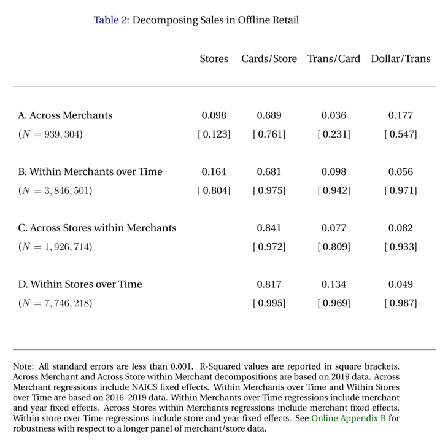
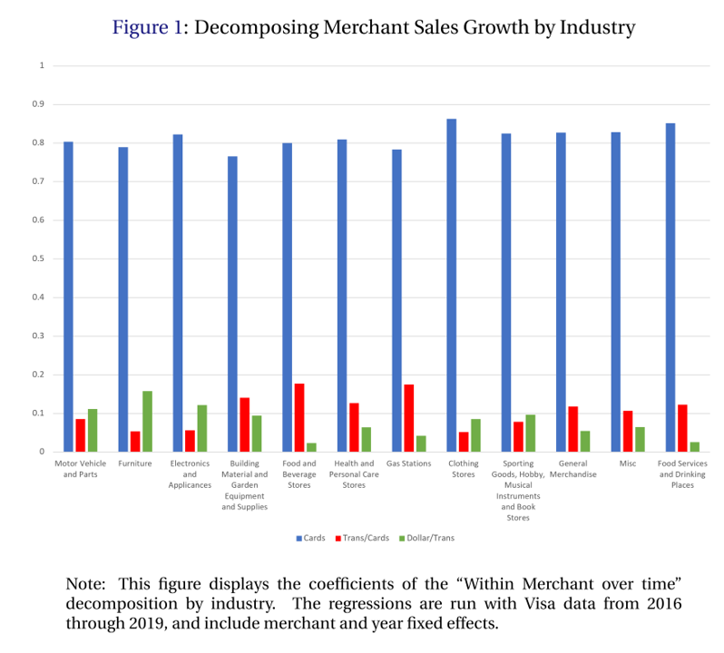
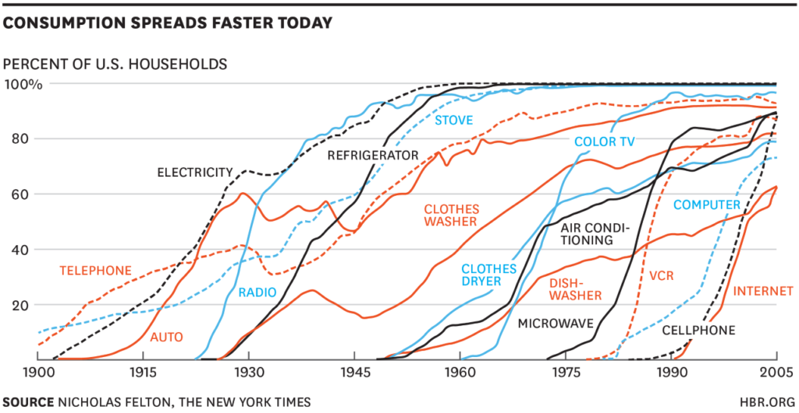
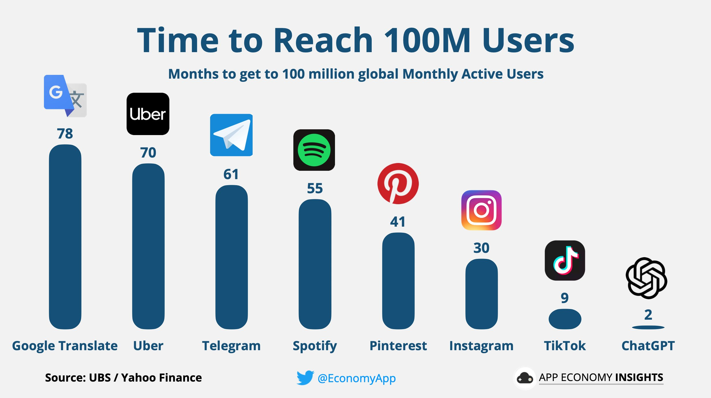
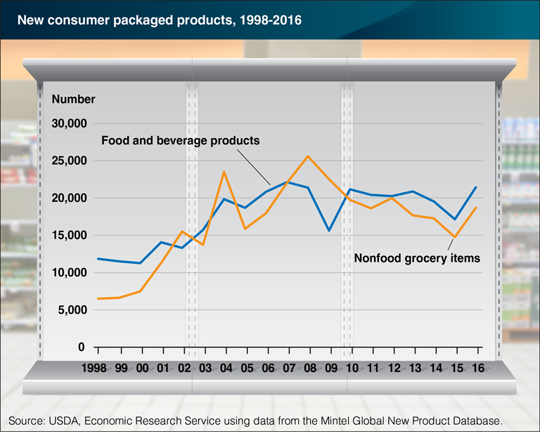
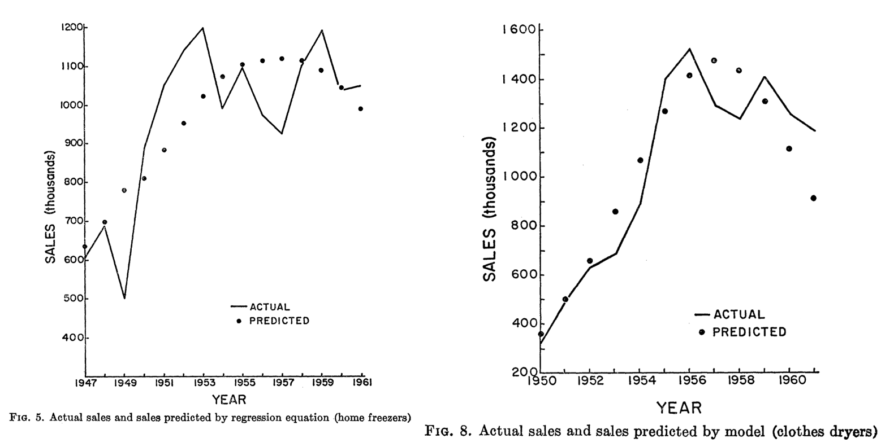
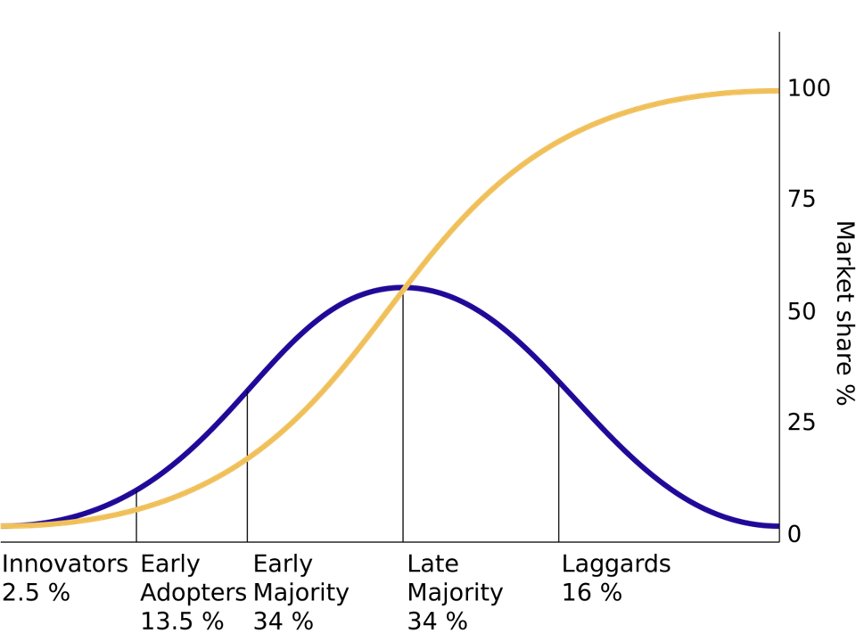
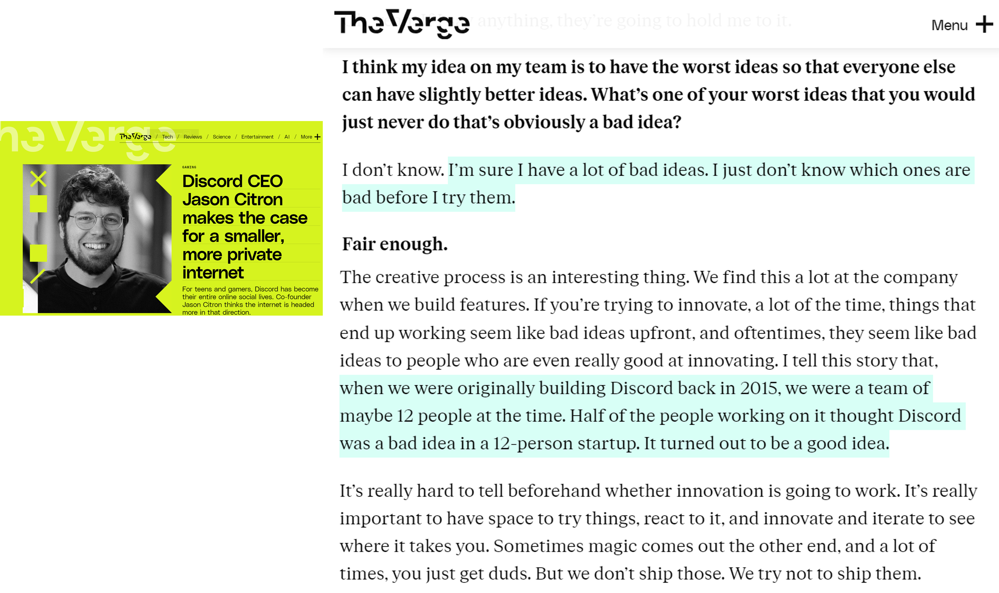
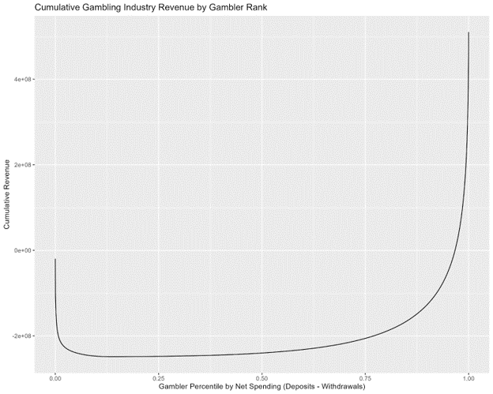

Customer Revenue
UCSD MGT 100 Week 09
Let’s reflect

Importance of Customer Acquisition
Einav et al. (2021) analyzed all US Visa CC transaction data
- >$1T spent in 32B transactions by 428MM cards at 1MM stores from 2016-19 - Assume card~=customer
\(\text{BrandRev.} = \sum spend \equiv \sum \frac{stores}{1} \frac{cards}{stores} \frac{transactions}{cards} \frac{spend}{transactions}\)
Research question: How well does each factor explain brand revenue?
Regressed log revenue on log RHS with merchant and year fixed effects


Customer Revenue Metrics
- Market size: How many customers might purchase?
- Diffusion: How does the served market change over time?
- CLV: How profitable are customer relationships?
Market Size
Market size (\(N\)): # of people who might pay to address the core need in a given time period
- Alternatively measured in $, units or volume - Noisy but helps inform potential returns to investments - Typical investor's first question: How big is the market? $100B market is viewed differently than a $100MM market - How will you know if you got the right answer? - What happens if you overestimate market size?“Marketing myopia:” Neglecting nontraditional competitors, e.g. Zoom v. Uber or Carnival v. Whistler
Market Size
- 3 ways to estimate:
- “Top Down” Total Addressable Market (TAM) :
How many people have the core need? - “Bottom up” Served Available Market (TAM):
How many people currently pay to solve the core need?- TAM=SAM+Unserved
- Analyst estimates
- “Top Down” Total Addressable Market (TAM) :
- Best practice: Use all three, triangulate, gauge sensitivity
Case study: US Mattress Market
USA population : ~340 million
Assumption : \(TAM\approx SAM\) (why? pros, cons?)
Assumption : Avg mattress lasts 7 years (pros, cons?)
Market size \(\approx\) 47.1 million people annually
Average mattress price : $283, across all bed sizes
Market size \(\approx\) $13.3B/year
Let’s check Grand View Research & ISPA
Diffusion curves


New Products by Year

Predicting Diffusion: Bass (1969)
\(M\) : Market size (we’ll estimate this)
\(t\) : Time periods
\(A(t)\) : Accumulated sales before time \(t\)
- AKA "installed base" - A(0)=0 by assumption\(\frac{dA(t)}{dt}\) : number of new adopters in time \(t\)
\(R(t)\) : Remaining customers who have yet to adopt, \(R(t)\equiv M-A(t)\)
- Bass (1969) proposed:
\[\frac{dA(t)}{dt}=pR(t)+q\frac{A(t)}{M}R(t)\]
\(p\) : “coefficient of innovation”
\(q\) : “coefficient of imitation”
- p and q assumed constant
Estimating Bass model via NLLS
\[\frac{dA(t)}{dt}=pR(t)+q\frac{A(t)}{M}R(t)\]
This is a first-order diffEQ with analytic solution
\[A(t)=M\frac{1-e^{-(p+q)t}}{1+\frac{q}{p}e^{-(p+q)t}}\]
If you have sales data by time, you can use Nonlinear Least Squares to estimate \(p\), \(q\) and \(M\), i.e. choosing parameters to minimize square errors \((LHS-RHS)^2\)
Estimating Bass model via OLS
Or, notice that \(\frac{dA(t)}{dt}=pR(t)+q\frac{A(t)}{M}R(t)\) \(=p(M-A(t)) + q* \frac{A(t)}{M}(M-A(t))\) \(=pM + (q-p)A(t)-\frac{q}{M} A(t)^2\)
We can regress \(\frac{dA(t)}{dt}\) on a quadratic in installed base
- Then recover p, q & M from the parameter estimates - We'll do bothExtensions: Multiple markets, hazard models,
types of “influence”
Models:estimators aren’t 1:1?
- Consider 3 OLS estimators:
\[\hat{\beta}=(X'X)^{-1}X'Y\]
\[min_\beta (Y-X\beta)'(Y-X\beta)\]
\[min_\beta [X'(Y-X\beta)]^2\]
"In theory, there's no difference between theory & practice. In practice, there is."
Many models offer multiple estimators. Some models have no estimators
Subfield that studies estimators: "econometrics"
Inspired by epidemiology

Which new products will catch on?

Rogers’ ACCORD Framework (2003)
Diffusion depends on Relative Advantage, Perceived Complexity, Compatibility, Observability, Risk, Divisibility (aka “Trialability”)
- Summarized 40 years of research, incredibly influential on practice - Provided diagnostics to interpret Bass (1969)'s predictive analytics - E.g., a prototype could be evaluated on these 6 dimensions then modified - Early example of HARKing but likely useful
More explanations for diffusion curves
Heterogeneity might drive adoption timing
- Adoption driven by consumer income, need or risk attitudes?Markets typically evolve after introduction
- Production becomes more efficient, prices and costs fall - New features, technology generations, safety improves - Competitors enter and target unserved customers - Network effects, e.g. smartphone compatibility with chargers or accessories - Complementors, e.g. Verizon stores, iFixIt, Genius Bar - Consumer preferences, e.g. reliability matters more with time

Core Needs Data: Google Trends
It’s relatively easy to measure Served Available Market
Google Trends reports search volume indices by keyword, place, time, service
- Also identifies keyword topics, trending terms & related queries - Samples the query database, reports estimates not totals - Requires a minimum query volume to avoid privacy violations - Free, so it could get sunsetted
Customer Lifetime Value
CLV is the most powerful customer analytics metric
- Expresses the firm's value of an individual customer relationship as the net present value of expected future customer profits - Pioneered in catalogue retailers in the 1980s - Has spread widely, but not yet everywhere - CLV metrics enable quantification, and hence serious discussion, of <br>novel policies
CLV Example: Housing First
- “In 2005, Utah set out to fix a problem that’s often thought of as unfixable: chronic homelessness. The state had almost 2,000 chronically homeless people. Most of them had mental-health or substance-abuse issues, or both. Utah started by just giving the homeless homes…
- The cost of shelters, emergency-room visits, ambulances, police, and so on quickly piles up. Lloyd Pendleton, the director of Utah’s Homeless Task Force … said that the average chronically homeless person used to cost Salt Lake City more than $20,000/year. Putting someone into permanent housing costs the state just $8,000 [including case managers]…
- Utah’s first pilot program placed 17 people in homes scattered around Salt Lake City, and after twenty-two months not one of them was back on the streets. In the years since, the number of Utah’s chronically homeless has fallen by 74%.”
Housing First: Looking deeper
Housing First has certainly not solved homelessness
- "Chronic" means disabled and unhoused for 1+ yrs, or 4x in 3 yrs - ~28% of CA homelessness is chronic (2019) - UT originally claimed 90% reduction, then revised their metric definitions - Reliable efficacy metrics are rare - Housing First has been implemented haphazardly - UT built new apartments. CA cities mostly use shelters, SROs, vouchers - Key Q: Require wraparound services? E.g. Addiction treatment, etc - Key Q: Does Housing First somehow encourage homelessness?I claim: Quantification enables bold policy shifts
- U.S. HUD adopted Housing First as preferred approach to homelessness in 2014 - CLV quantifies policy costs and benefits & enables ex-post evaluations - We then can use data to refine CLV estimates and policies
Calculating CLV
- \(T\) : planning horizon
- \(m_t\) : contribution margin of serving customer \(i\) in time \(t\)
- \(r\) : retention probability that customer buys in \(t+1\)
- \(i\) is the cost of capital
- \(CLV=\sum_{t=0}^T\frac{m_t r^t}{(1+i)^t}\)
- \(m_t\) and \(r\) observable in past data; future values are predictions
CLV Example
- A tennis club charges an annual fee of $300
- The average club member spends $100 a year at the club (concessions, etc.)
- The average contribution margin on these additional expenditures is 60%
- Historically, 80% of the members rejoin the club in any given year. The club’s cost of capital is 15%
- What is the club’s CLV over a 1-year horizon?
- What is the club’s avg. CLV over a 2-year horizon?
- What is the club’s avg. CLV over a 3-year horizon?
Using CLV for Customer Acquisition
Marketing campaigns should be profitable if Avg. Customer Acquisition Cost (CAC) \(<\) CLV
- Caveat: So long as acquired customers have CLV>=avg CLV of existing customers - Often, managers impose a "fudge factor" as a speedbumpSuppose the tennis club has a chance to pay $20k for a billboard. It will be seen by 100K people with an expected conversion rate of .1%. Should we do it?
Similar “break-even” calculations possible for
- partnerships, opening new stores, price promotions, etc. Anything that requires an upfront outlay to potentially acquire new customers, increase current customer retention, or develop current customer spending
CLV Metrics in Practice
CLV popularity rose alongside CRM data systems
- e.g. Oracle, SAP, Salesforce - Services and retailers used CLV to set customer experiences: high-CLV flyers got upgraded, high-CLV lodgers got better rooms, high-CLV shoppers got sterling return service and attention, high-CLV callers got shorter wait times and more considerationIn the 00s, consulting firms published claims that 20-30% of customers were unprofitable. Many firms tried to “fire” unprofitable customers
- American Express offered some cardholders $300 to cancel their cards. Best Buy stopped notifying some shoppers about upcoming promotions. Banks used minimum balances and teller fees to drive away some accountholdersCustomers talk to each other; firing customers is a brand risk

CLV Cautions & Risks
CRM data may be incomplete, disconnected, error prone
- E.g., can you connect customer identity across different credit card #s? - Think about measurement error in retention rateCLV models are typically misspecified & uncertain
- CLV-based policies may be self-fulfilling - Treat someone as unprofitable, they may act that wayGuiding Principle
- The firm and the customer share an interest in creating an optimum level of customer value. Using CLV metrics for value creation benefits everyone - The firm and the customer have opposing interests in price. Using CLV for margin extraction creates perverse incentives for customers - Customer dissatisfaction may reveal CLV flaws; requires careful attention - Hence many firms now measure point-of-sale satisfaction

- Suppose you tutor a high school student for $250/month. There is a 10% chance the student will move and find a new tutor in any given month. There are six months remaining in the school year, at which point the tutoring arrangement will definitely end.
- What missing information do you need to calculate the current value of the tutoring arrangement?Class script
- Let’s estimate the Bass model

Wrapping up
Homework
- Let’s take a look

Recap
- Customer acquisitions best predict revenues
- Market size estimates how many people share a core need
- Diffusion models predict how served market changes
- CLV metrics can quantify and enable novel policies

Going further
Innovation Diffusion and New Product Growth Models (Peres et al. 2009)
Customer-Base Valuation in a Contractual Setting with Heterogeneity (Fader & Hardie 2010)
Exploring the Distribution of Customer Lifetime Value (Fader & Hardie 2017)